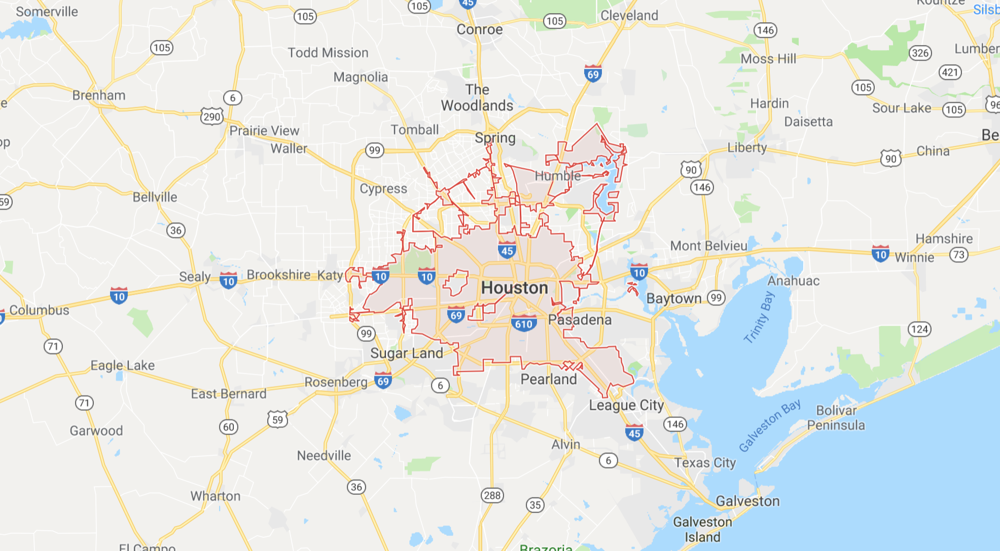

City Boundaries
Each city boundary is centered on the lat/lon provided by a Google search.
Manila, Philippines - 20 km radius surrounding lat/lon 14.5995, 120.9842 - Rammasan 40 mph
Tacloban, Philippines - 11 km radius surrounding lat/lon 11.2543, 124.9617 - Haiyan 184 mph
Cebu City, Philippines - 20 km radius surrounding lat/lon 10.3157 123.8854 - Haiyan 140 mph
Panama City, Florida - 20 km radius surrounding lat/lon 30.1588 -85.6602
[Too few norm tweets]
Tampa & St. Petersburg, Florida - 40 km radius surrounding lat/lon 27.9506 -82.4572
Willmington, NC - 20 km radius surrounding lat/lon 34.2104 -77.8868
[Low local tweets compared to 10km and above tweets.]
Hong Kong, China - 36 km radius surrounding lat/lon 22.3964 114.1095
Houston, Texas - 42 km radius surrounding lat/lon 29.7604 -95.3698

Tokyo, Japan - 50 km radius surrounding lat/lon 35.6895 139.6917
Hamamatsu, Japan - 50 km radius surrounding lat/lon 34.7108 137.7261
Shingū, Japan - 50 km radius surrounding lat/lon 33.7241 135.9924
San Juan - 20 km radius surrounding lat/lon 18.4655, -66.1057
Jacksonville, Florida - 42 km radius surrounding lat/lon 30.3322 -81.6557